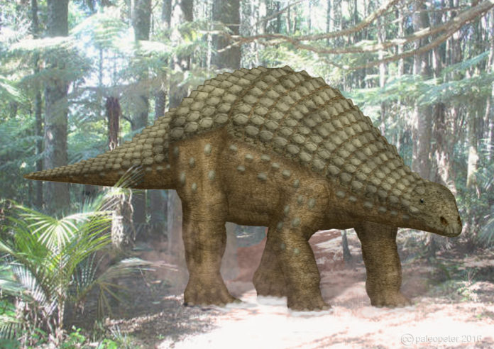
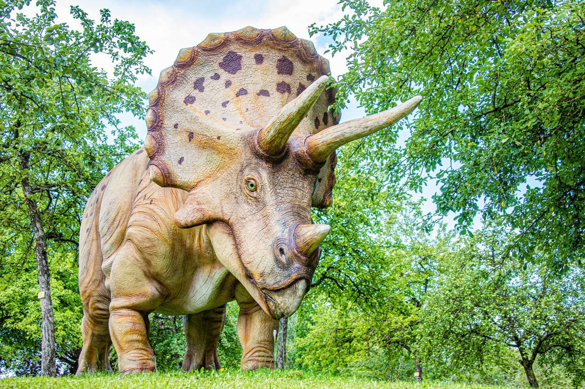
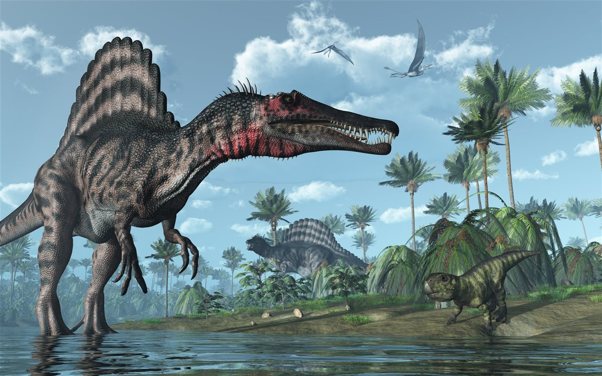

Nodosaurus textilis es la única especie conocida del género extinto Nodosaurus (que significa "lagarto nudoso") de dinosaurio tireóforo nodosáurido, que vivió a finales del período Cretácico, entre 100 a 97 millones de años atrás, durante el Cenomaniense en lo que hoy es Norteamérica.
Nodosaurus era un dinosaurio acorazado que tenía placas dermales óseas que cubrían la parte superior de su cuerpo, y pudo haber tenido púas a lo largo de sus flancos, tenía aproximadamente 4 a 6 metros de largo. En 2010, Paul estimó su longitud en 6 metros y su peso en 3,5 toneladas. Los osteodermos estaban ubicados en bandas a lo largo de su cuerpo, con las bandas estrechas sobre las costillas que se alternan con placas más anchas entre estas. Estas placas más anchas estaban cubiertas con los nódulos huesudos regularmente dispuestos, que dan a animal su nombre científico.2 Caminaba sobre sus cuatro patas, cortas y poderosas, apoyando en los cinco dedos, un cuello corto y una larga, tiesa, cola sin porra. La cabeza era estrecha, con un hocico acentuado, las quijadas grandes, y pequeños dientes. Probablemente comía plantas suaves, pues habría no podido masticar las resistentes, fibrosas, o pudo haber procesado alternativamente estas últimas con gastrolitos y sus enormes aparatos intestinales.
Se piensa que sin una maza en su cola, 'Nodosaurus' ' no habría tenido mucho en términos de defensas activas. Cuando estaba amenazado, probablemente se echaba a la tierra de modo que solamente su parte posterior y lados acorazados quedaban expuestos, como en los modernos erizos. Los muchos escudos de nodosáuridos encontrados en los EE. UU. tienen una buena probabilidad de ser identificado, y probablemente del género Nodosaurus.
En 1998, James Kirkland y Kenneth Carpenter proporcionaron un diagnóstico mejorado de la especie. La cabeza del muslo se extiende hacia afuera. La tibia es delgada y su extremo inferior no se despliega bruscamente como en Sauropelta. La armadura del lomo difiere de la de todos los demás Nodosauridae en presencia de un par de placas rectangulares a cada lado de la línea central con un centro abovedado, combinado con sectores inferiores que consisten en filas transversales de placas rectangulares más pequeñas con un centro abovedado intercalado con filas de placas cuadradas planas aún más pequeñas. El escudo de cadera real consiste en osteodermos hexagonales planos entrelazados.
| |
 |  |
| |
|
|